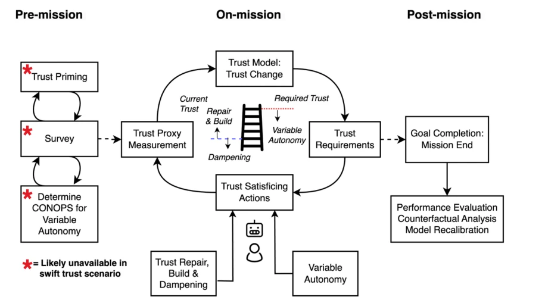
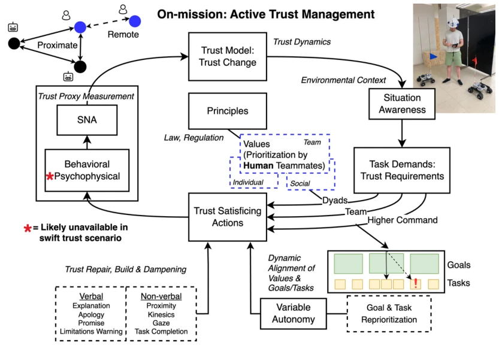

This paper is less of a technical breakthrough and more of a "wake-up call" for the HRT field. Authors Webb and Hunt did not pursue novel VLA or reinforcement learning, but instead focused on the oft-cited yet often overlooked issue of "trust". Their proposed perspective of "Trust Satisficing" is quite interesting, no longer fixated on "repair" after trust collapse, but emphasizing maintaining a "sufficient" level of trust in dynamic tasks. This aligns better with practical logic than simple patching, as rescue sites have no time to wait for trust reconstruction. However, the psychophysical metrics (such as EEG) mentioned in the framework are almost infeasible in emergency ad hoc teaming (swift trust) scenarios, a point the authors themselves admitted, which counts as honestly drawing boundaries. Overall, this is a chapter leaning towards a theoretical framework, with guidance significance for engineering implementation, but specific algorithm implementation still relies on subsequent research, and the quantification of "trust" still relies on existing proxy metrics, appearing somewhat conservative.
研究动机Motivation
随着具身智能在高风险环境（如搜救）中的应用，机器人自主性提升，但信任问题也随之加剧。现有研究多聚焦于信任修复（Trust Repair），即信任受损后的补救（Baker et al., 2018; Kox et al., 2021），但这忽略了信任的动态性和情境依赖性。Huang et al. (2021) 指出传统二元信任研究缺乏动态时间线因素。Webb 和 Hunt 认为，在临时组队（ad hoc teams）中，信任往往是临时的（swift trust），单纯修复不够，需要主动管理。此外，道德敏感情境下（如价值判断），机器人自主性可能不足，需要人类介入。现有框架缺乏对信任需求动态变化的响应，导致任务失败风险增加。因此，需要一种主动信任管理框架，结合变量自主性（variable autonomy）来动态调整人机协作模式，确保在任务需求变化时信任水平始终“满足”（satisficing）而非崩溃。
With the application of embodied intelligence in high-risk environments (such as rescue), robot autonomy increases, but trust issues also intensify. Existing research mostly focuses on Trust Repair, i.e., remediation after trust damage (Baker et al., 2018; Kox et al., 2021), but this ignores the dynamic nature and situational dependency of trust. Huang et al. (2021) point out that traditional binary trust research lacks dynamic timeline factors. Webb and Hunt argue that in ad hoc teams, trust is often temporary (swift trust), simple repair is insufficient, and active management is needed. Additionally, in morally sensitive situations (such as value judgments), robot autonomy may be insufficient, requiring human intervention. Existing frameworks lack response to dynamic changes in trust needs, leading to increased risk of task failure. Therefore, an active trust management framework is needed, combining variable autonomy to dynamically adjust human-robot collaboration modes, ensuring that trust levels remain "satisficing" rather than collapsing when task requirements change.
方法Method
核心是“主动信任管理框架”，分为任务前、任务中、任务后三个阶段。任务前通过信任调查（Trust Survey）建立基线，信任启动（Trust Priming）校准用户心智模型，制定变量自主性概念操作（CONOPS），明确人机责任边界。任务中是核心闭环：首先测量信任代理指标，包括行为指标（如人与机器人的运动同步性，Webb et al., 2024）、心理物理指标（EEG/ECG，但临时组队受限）和社会网络分析（SNA）。其次，使用贝叶斯信念网络（BBN）构建“信任输出”（trust-out）和“信任输入”（trust-in）双模型，推断隐含的信任状态。最后，根据信任状态执行“信任满足”行动，如信任修复、提升信任或降低信任需求（通过变量自主性将控制权交还人类）。任务后用于复盘。创新点在于将信任视为动态变量而非静态属性，并引入 BBN 进行状态推断，同时强调价值对齐（value alignment）对自主性切换的驱动作用，确保机器人在道德敏感情境下不越权。
The core is the "Active Trust Management Framework", divided into three phases: pre-task, during-task, and post-task. Pre-task establishes a baseline through Trust Survey, calibrates user mental models via Trust Priming, formulates Variable Autonomy Concept of Operations (CONOPS), and clarifies human-robot responsibility boundaries. During-task is the core closed loop: first measure trust proxy metrics, including behavioral metrics (such as motion synchronicity between human and robot, Webb et al., 2024), psychophysical metrics (EEG/ECG, but limited in ad hoc teams), and social network analysis (SNA). Second, use Bayesian Belief Networks (BBN) to construct dual models of "trust-out" and "trust-in" to infer implicit trust states. Finally, execute "Trust Satisficing" actions based on trust states, such as trust repair, enhancing trust, or reducing trust demands (returning control to humans via variable autonomy). Post-task is used for review. Innovations lie in viewing trust as a dynamic variable rather than a static attribute, introducing BBN for state inference, while emphasizing the driving role of value alignment on autonomy switching, ensuring robots do not overstep authority in morally sensitive situations.

Fig. 1. A flow diagram depiction of the stages of our active trust management concept, which begins before deployment. Depending on whether the mission is routine or ad hoc, the ‘swift trust’ demand will shape the possibility of including all elements. ‘Satisficing trust’ can involve raising trust levels (at the dyad, team, or system levels) through actions to repair or build it, dampening it prudently if agent capabilities are becoming a poor match for the task, and/or lowering required trust, by taking greater control of the robot through variable autonomy (i.e., lowering the autonomy level).

Fig 2. This diagram illustrates the central feedback loop of the on-mission phase of active trust management, where trust is continually measured, modelled, and acted upon to meet dynamic mission requirements. An important aspect of HRT trust satisficing is the continued dynamic alignment of the robot and human goals and tasks with humans’ individual, team and social values, which requires periodic goal and task reprioritization; this need for dynamic value alignment provides additional motivation for a variable level of autonomy whereby users can intervene with robot goal and task choices where necessary. A non-exhaustive variety of trust repair and build methods are shown.
实验Experiments
本文主要提出框架，实验部分引用了作者团队的前期工作。在 Webb et al. (2024) 的实验中，22 名参与者与两个机器人协作，使用超声波追踪系统记录全身运动动态。结果显示，信任变化与人和最常用机器人之间的运动同步性呈正相关。当通信中断导致信任受损时，同步性下降，且难以恢复。此外，Milivojevic et al. (2024) 探讨了临时组队中的“快速信任”（swift trust）发展。这些实验验证了行为指标（运动同步）作为信任代理的有效性，但也揭示了在临时组队中无法使用侵入式心理物理指标的限制。框架中的 SNA 和 BBN 模型目前主要基于理论推导，尚未在大规模真实任务中验证，更多是概念性验证。
This paper mainly proposes a framework, and the experimental section cites the author team's prior work. In Webb et al. (2024)'s experiment, 22 participants collaborated with two robots, using an ultrasound tracking system to record full-body motion dynamics. Results show that trust changes are positively correlated with motion synchronicity between humans and the most frequently used robot. When communication interruption causes trust damage, synchronicity decreases and is difficult to recover. Additionally, Milivojevic et al. (2024) explored the development of "swift trust" in ad hoc teams. These experiments validated the effectiveness of behavioral metrics (motion synchronicity) as trust proxies, but also revealed the limitations of not being able to use invasive psychophysical metrics in ad hoc teams. The SNA and BBN models in the framework are currently mainly based on theoretical derivation, not yet verified in large-scale real tasks, more of a conceptual validation.